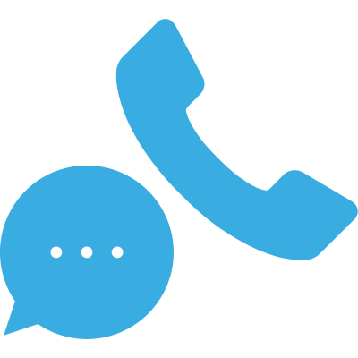
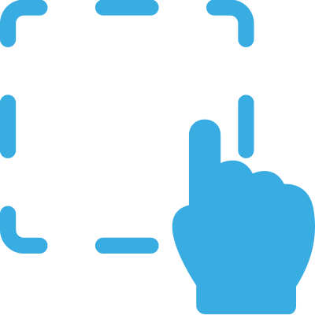
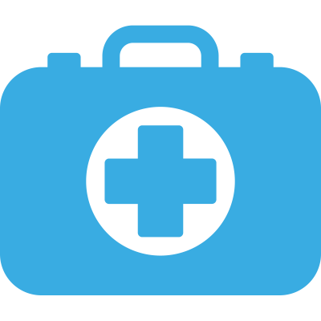
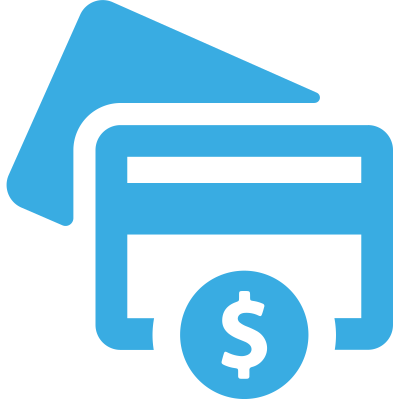
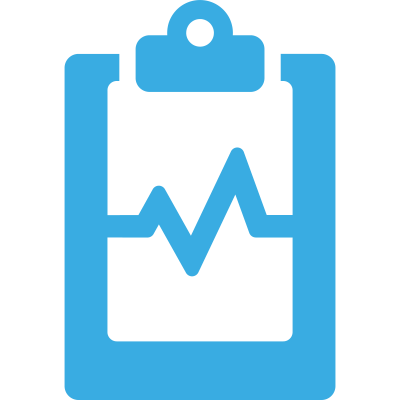

Atención médica a domicilio 24 horas en todo Santiago.
Ayuda Salud es un llamado a su bienestar.
Para asegurar que tu consulta sea atendida.
Para acudir a tu llamado dentro de todo Santiago
Para cuidar a quienes más quieres.
A través de los canales disponibles: teléfono, chat o correo.
Médico, enfermería, kinesiología, cuidadores, exámenes o traslado.
Directamente en el domicilio indicado, en cualquier comuna de Santiago.
A través de los siguientes métodos de pago: Transbank, transferencia electrónica o efectivo.
Cuando quieras y dónde sea que estés podrás chequear tu historial o ficha médica.
Médicos generales dedicados a la atención de niños, adultos y adultos mayores, con experiencia en diagnóstico y manejo de enfermedades agudas y crónicas.
El médico asiste acompañado de un personal de enfermería, con insumos y medicamentos en caso de requerirse algún procedimiento a la brevedad.
Sondas.
Curaciones.
Tratamientos inyectables.
Nebulización y aspiración de secreciones.
Oxigenoterapia.
Visitas de supervisión y control.
Evaluación kinésica integral.
Kinesiología respiratoria en niños y adultos.
Neurorehabilitación infantil y adulta.
Kinesiología en geriatría.
Rehabilitación traumatológica.
Servicios de cuidado continuo, apoyo sanitario, alimentación y movilización de pacientes.
Personal colaborador en la ejecución de procedimientos básicos de enfermería y en acciones de: promoción de salud, protección, recuperación y rehabilitación del paciente y su familia bajo la supervisión del personal médico.
Exámenes de laboratorio y electrocardiograma en domicilio.
Los resultados serán entregados lo antes posible mediante correo electrónico o llevados directamente por el médico en caso de agendar un control.
Traslados en ambulancia básica dentro de Santiago y a Regiones.
Somos una empresa de servicios de salud a domicilio, con cobertura en toda la Región Metropolitana que funciona 24 horas, todos los días. Nuestro objetivo es dar soluciones a los problemas de salud evitando desplazarse fuera del hogar, entregando bienestar al paciente y su familia. Queremos ser líderes en los cuidados de la salud pre y post hospitalaria, mediante el mejoramiento continuo, innovación y uso de la tecnología.

Si tienes dudas acerca de nuestros servicios, consultas generales y sugerencias, escríbenos
Atendemos en toda la Región Metropolitana, 24 horas al día y los 365 días del año.
Agenda tu cita telefónicamente a través de los números que aparecen en nuestra página web o por medio de nuestro chat online. Una vez ingresado el paciente a nuestro sistema, el tiempo de espera es regularmente de una hora. En algunos casos el tiempo es mayor cuando hay mayor demanda y viceversa.
Nombre completo, RUT, fecha de nacimiento, motivo de consulta y antecedentes médicos relevantes, dirección, previsión, seguro médico, teléfono de contacto y correo electrónico.
No todo lo que el paciente percibe como urgencia realmente lo es. Una urgencia médica es una situación en la que se requiere de una oportuna atención médica sin encontrarse en riesgo la vida del paciente. Emergencia médica es definida como una situación que amenaza inmediatamente la vida de una persona y cuya asistencia no puede ser demorada. NOSOTROS NOS ENFOCAMOS EN URGENCIAS MÉDICAS.
En cada consulta entregamos boleta de servicio que puede ser reembolsada por ISAPRES.
Con bono de atención médica domiciliaria que puede comprar en cualquier sucursal FONASA. Telefónicamente le damos los datos para comprar el bono. Si necesita la atención a la brevedad nos puede dejar la garantía y tiene 7 días hábiles para entregar el bono en la central.
A nombre de: Servicios Médicos Daniel Zurita Seguel.
RUT: 76.506.488-0
Banco de chile.
Nro. de cta.: 01800458703
Cuenta corriente.
Correo: contacto@ayudasalud.cl
La ficha clínica online es un documento que recoge toda la información de tus atenciones médicas realizadas con nosotros con la finalidad de garantizar transparencia y el acceso a tu historial médico cuando quieras. Con la información proporcionada, le ayudará a Ud. y a su médico planificar sus controles en forma personalizada. Para ver su historia clínica entre a a href="http:www.mihc.cl" www.mihc.cl
Sí; para esto debes presentar el documento de tu seguro durante la atención, el cuál debe ser llenado por el médico.
Se emiten Licencias Médicas y Certificados según indicación médica.
Agenda tu cita por vía telefónica o por chat online en nuestra página web.
Escoge el servicio que deseas: Servicio médico, enfermera, cuidador, toma de exámenes, curaciones, tratamiento, etc.
Acude a tu domicilio un personal médico y de enfermería quienes efectúan la atención médica preparados para realizar tratamiento inyectable o procedimientos en caso de que lo necesites. El médico emite órdenes de exámenes, recetas, licencia o certificado si lo ameritas y registra la atención médica en Mi HC online.
Al finalizar tu consulta médica, emitimos tu boleta de atención y ya puedes cancelar por cualquiera de los medios de pago mencionados.
Una vez terminada tu atención médica, podrás entrar a: www.mihc.cl, para visualizar tu atención médica e indicaciones. Estas las podrás ver las veces que desees desde cualquier computador o dispositivo móvil conectado a internet.